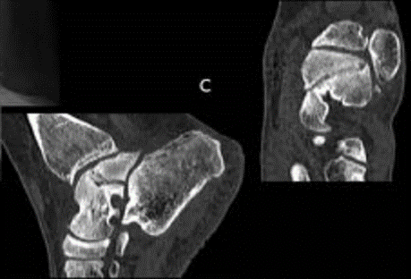

Fractura por stress


Se produce por un estrés repetido o por uso excesivo que excede la capacidad de los músculos para absorber el estrés, estas fracturas involucran el fémur, la pelvis o algún miembro inferior.
-
Síntomas:
- Dolor
- Inflamación
-
Signos imagenológicos en RM:
- Trazo desde la corteza
- Reacción perióstica
- Áreas focales de formación de callo
- Engrosamiento cortical alrededor del sitio de la fractura
- T1 y Stir cambios inflamatorios periarticulares a nivel periastragalino
- La señal se observa disminuida en las secuencias T1 y T2, generalmente en forma de trazo que surge de la corteza del hueso y se extiende perpendicular a la superficie, acompañado de reacción perióstica